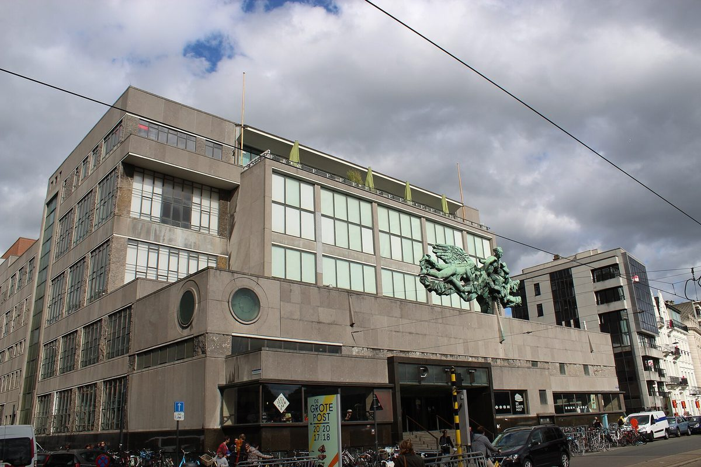

벨기에 오스텐더시, 시민 협동조합 보방과 구도심 화석연료 없는 난방 추진…26일 시의회에 'F5D' 컨소시엄 협약 상정

10년째 열공급망 함께 운영한 협동조합이 1차 배관망 설계·주민 참여 맡고 시는 도로·건물·공사 정보 공유…동네 열교환소로 기존 주택·소형 아파트 연결 목표
벨기에 플랑드르 해안도시 오스텐더(Oostende)가 시민 협동조합 보방(Beauvent)과 함께 구도심을 화석연료 없는 난방 지구로 바꾸기 위한 플랑드르 지역 사업 'F5D(First Five Fossil-Free Districts, 첫 5개 무화석 지구)' 컨소시엄 협약을 26일(현지시각) 저녁 시의회 안건으로 올렸다. 전기가 아닌 난방 열을 다루는 이 사업의 첫 대상 구역은 구도심(Oud-Centrum)과 옛 우체국 건물 '더 흐로터 포스트(De Grote Post)' 주변이다. 보방은 협력사 워크룸(Workroom)·켈빈 솔루션스(Kelvin Solutions)와 함께 열공급망 시나리오와 모델을 짜고, 주로 1차 배관망 기술 설계와 열 사용자 참여를 맡는다. 시는 공공 도로와 시 소유 건물, 예정된 공사 정보를 내주고 재원 마련과 보방과의 협력 방식을 함께 검토하는 지원 역할을 맡으며, 동네 열교환소와 2차 배관망을 거쳐 기존 개인 주택과 작은 아파트 건물까지 화석연료 없는 난방망에 잇는 것이 목표다. 오스텐더시와 보방은 10년째 이 도시의 열공급망을 함께 운영해 왔고, 보방은 폐기물 에너지 회수 시설 비오스톰(Biostoom)과의 연결 등으로 망을 넓히면서 이 구간을 위한 시민 출자를 모집했다. 사업비와 연결 가구 수는 아직 알려지지 않았으며, 같은 주 브뤼허(Brugge)시도 같은 컨소시엄에 들어갈지 정한다.
시민에너지 관점
시민 협동조합이 난방 배관망을 짓고 운영하며, 시는 도로·건물 정보와 공사 일정을 내주며 돕는 방식은 지자체와 시민이 역할을 나눈 열 에너지 협력의 좋은 본보기다. 독일 니더작센주의 윈데(Jühnde) 마을은 2005년 주민 협동조합이 바이오가스 발전과 마을 열공급망을 함께 운영하는 '바이오에너지 마을'로 문을 열어, 주민이 열 인프라의 주인이 될 수 있음을 먼저 보여 줬다. 열공급망은 처음 드는 돈이 커 시민이 감당하기 어렵다는 우려가 있지만, 시가 공공 정보와 부지를 내주고 협동조합이 출자를 모아 배관을 단계적으로 늘리면 위험을 나눠 질 수 있다. 국내에서도 소각장·산업단지에서 버려지는 열을 지역 협동조합이 소유하는 열공급망으로 이을 수 있도록 지자체가 먼저 손을 내밀어야 한다.
출처: LokaalNIEUWS 2026-10-25 Jan Maes 원문 보기
ベルギー・オーステンデ市、市民協同組合ボーヴェントと旧市街の化石燃料ゼロ暖房を推進…26日の市議会に「F5D」コンソーシアム協定を上程
10年にわたり熱供給網を共に運営してきた協同組合が一次配管網の設計と住民参加を担い、市は道路・建物・工事情報を共有…地区熱交換所を通じ既存住宅と小規模集合住宅の接続を目指す
ベルギー・フランデレン地方の海辺の都市オーステンデ（Oostende）が、市民協同組合ボーヴェント（Beauvent）と共に旧市街を化石燃料を使わない暖房地区に変えるため、フランデレン地域の事業「F5D（First Five Fossil-Free Districts、最初の5つの化石燃料ゼロ地区）」のコンソーシアム協定を26日（現地時間）夜の市議会の議案に上程した。電気ではなく暖房の熱を扱うこの事業の最初の対象区域は、旧市街（Oud-Centrum）と旧郵便局の建物「デ・フローテ・ポスト（De Grote Post）」の周辺だ。ボーヴェントは協力会社のワークルーム（Workroom）、ケルビン・ソリューションズ（Kelvin Solutions）と共に熱供給網のシナリオとモデルを作り、主に一次配管網の技術設計と熱利用者の参加を担う。市は公道や市有建物、予定工事の情報を提供し、財源確保とボーヴェントとの協力のあり方を共に検討する支援役を担い、地区熱交換所と二次配管網を通じて既存の個人住宅や小規模な集合住宅まで化石燃料のない暖房網につなぐことを目指す。オーステンデ市とボーヴェントは10年にわたってこの都市の熱供給網を共に運営しており、ボーヴェントは廃棄物エネルギー回収施設ビオストーム（Biostoom）との接続などで網を広げながら、この区間のための市民出資を募った。事業費や接続世帯数はまだ明らかになっておらず、同じ週にはブルッヘ（Brugge）市も同じコンソーシアムに加わるかどうかを決める。
市民エネルギーの視点
市民協同組合が暖房の配管網を建設・運営し、市が道路や建物の情報、工事日程を提供して支える方式は、自治体と市民が役割を分け合う熱エネルギー協力のよい手本だ。ドイツ・ニーダーザクセン州のユーンデ（Jühnde）村は2005年、住民協同組合がバイオガス発電と村の熱供給網を共に運営する「バイオエネルギー村」として始まり、住民が熱インフラの持ち主になれることをいち早く示した。熱供給網は初期費用が大きく市民には負担しきれないとの懸念もあるが、市が公共の情報や用地を提供し、協同組合が出資を集めて配管を段階的に延ばせば、リスクを分かち合える。韓国でも焼却施設や産業団地で捨てられている熱を地域協同組合が所有する熱供給網につなげられるよう、自治体が先に手を差し伸べるべきだ。
出典: LokaalNIEUWS 2026-10-25 ヤン・マース（Jan Maes） 原文を読む
比利时奥斯坦德市与市民合作社Beauvent推进老城区无化石燃料供暖…26日向市议会提交"F5D"联合体协议
共同运营供热管网10年的合作社负责一级管网设计和居民参与，市政府共享道路、建筑和工程信息…目标是通过街区换热站接入现有住宅和小型公寓楼
比利时佛兰德海滨城市奥斯坦德（Oostende）为与市民合作社Beauvent一起把老城区改造成不用化石燃料的供暖街区，将佛兰德地区项目"F5D（First Five Fossil-Free Districts，首批5个无化石燃料街区）"的联合体协议列入26日（当地时间）晚间市议会的议程。这一项目处理的是供暖热能而非电力，首个对象区域是老城区（Oud-Centrum）和旧邮局大楼"De Grote Post"周边。Beauvent将与合作伙伴Workroom、Kelvin Solutions一起制定供热管网的方案和模型，主要负责一级管网的技术设计和用热户参与。市政府提供公共道路、市有建筑和计划工程的信息，并共同研究筹资及与Beauvent的合作方式，承担支持角色；目标是通过街区换热站和二级管网，把现有私人住宅和小型公寓楼也接入无化石燃料的供暖网。奥斯坦德市与Beauvent已共同运营该市供热管网10年，Beauvent正通过与废弃物能源回收设施Biostoom连接等方式扩大管网，并曾为这一管段面向市民募集出资。项目费用和接入户数尚未公布，同一周布鲁日（Brugge）市也将决定是否加入同一联合体。
市民能源视角
由市民合作社建设并运营供暖管网、市政府提供道路和建筑信息及工程日程加以支持，这种方式是地方政府与市民分工合作发展热能的良好范例。德国下萨克森州的约恩德（Jühnde）村2005年以"生物能源村"起步，由居民合作社共同运营沼气发电和村级供热管网，较早证明了居民可以成为热力基础设施的主人。有人担心供热管网初期投入大、市民难以承担，但如果市政府提供公共信息和用地、合作社募集出资分阶段扩建管道，风险就可以共同分担。韩国也应由地方政府先伸出手，让焚烧厂和产业园区排放的余热接入由地方合作社拥有的供热管网。
来源: LokaalNIEUWS 2026-10-25 扬·马斯（Jan Maes） 查看原文
Oostende puts F5D consortium agreement with citizen co-op Beauvent before city council on 26 October to pursue fossil-free heating in the old centre
The cooperative that has run the city's heat network with it for ten years will design the primary network and engage residents, while the city shares road, building and works information; goal is to connect existing homes and small flats through neighbourhood substations
The Belgian coastal city of Oostende in Flanders has put a consortium agreement for the Flemish project F5D (First Five Fossil-Free Districts) on the agenda of its city council meeting on the evening of 26 October, local time, as it works with the citizen cooperative Beauvent to turn its old centre into a district heated without fossil fuels. The project concerns heat rather than electricity, and its first target zone is the Oud-Centrum and the area around De Grote Post, the former post office building. Beauvent, together with partners Workroom and Kelvin Solutions, will draw up scenarios and models for the heat network, taking charge mainly of the technical design of the primary network and of engaging heat users. The city will play a supporting role, sharing information on public roads, its own buildings and planned works and helping to examine financing and forms of cooperation with Beauvent, with the aim of connecting existing private houses and smaller apartment buildings to fossil-free heating through neighbourhood substations and secondary networks. The city and Beauvent have run Oostende's heat network together for ten years, and Beauvent, which is expanding the network including through a connection to the Biostoom waste-to-energy plant, has raised capital from citizens for that section. The project cost and number of households to be connected have not been disclosed, and the city of Bruges is to decide the same week whether to join the same consortium.
Citizen Energy View
A citizen cooperative building and running the heating pipes while the city supports it with road and building information and works schedules is a good example of a local government and citizens dividing roles in heat energy. In the German village of Jühnde in Lower Saxony, a residents' cooperative began running a biogas plant and a village heat network together in 2005 as a "bioenergy village", showing early on that residents can own heat infrastructure. There are worries that heat networks cost too much up front for citizens to bear, but if the city provides public information and land and the cooperative raises member capital to extend the pipes step by step, the risk can be shared. In Korea too, local governments should take the first step so that heat wasted at incinerators and industrial parks can be fed into heat networks owned by local cooperatives.
Source: LokaalNIEUWS 2026-10-25 Jan Maes Read the original